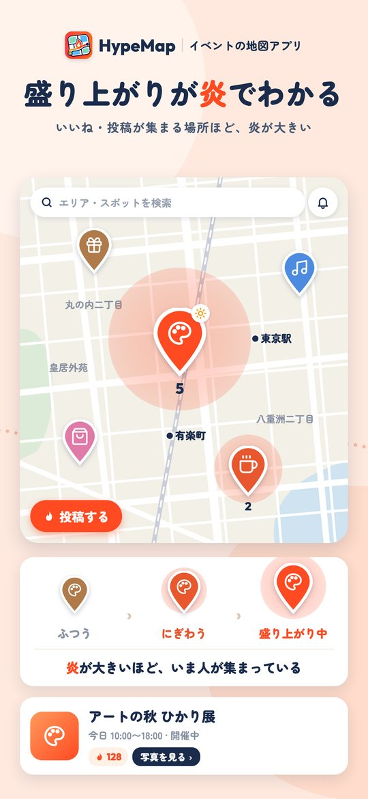
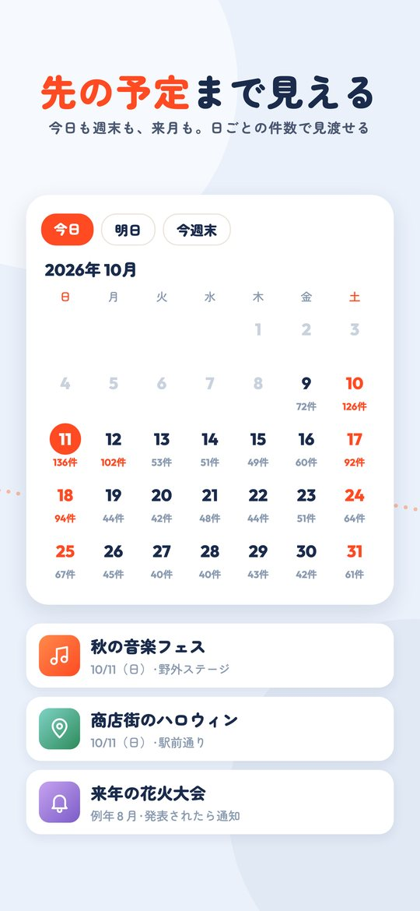
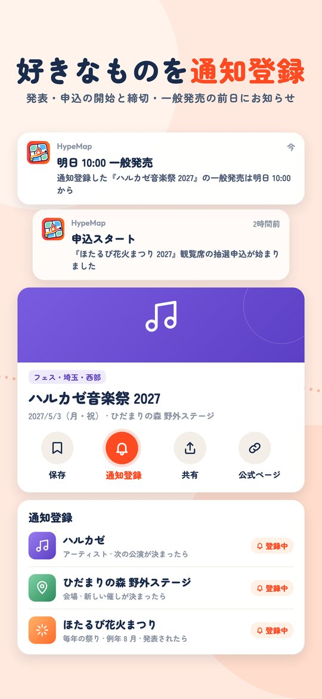
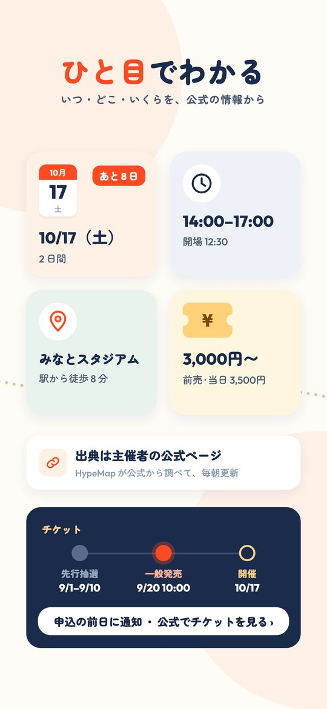
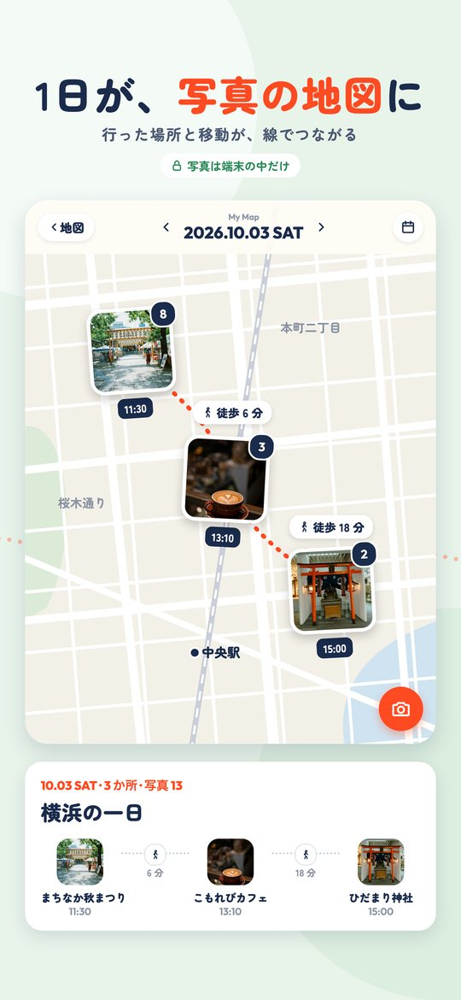
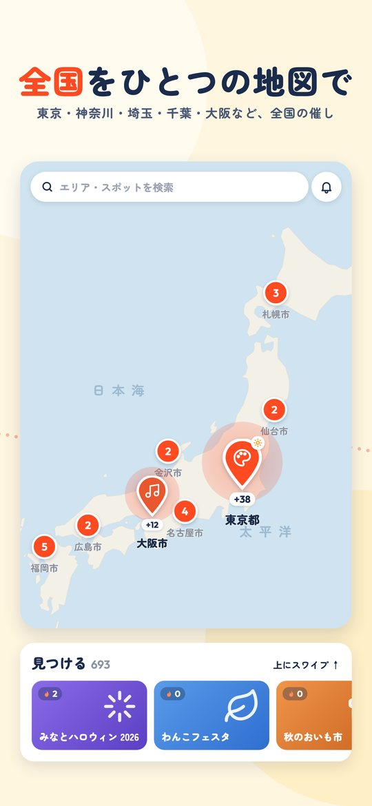

HypeMap
今日どこ行く？
イベントが炎でわかる地図
ライブ・祭り・マルシェ・試合を、公式の情報だけで。東京・大阪・名古屋・福岡など全国の催しを、ひとつの地図に。
まもなく App Store で公開





できること
炎でわかる、今の盛り上がり
いいねや投稿が集まっている場所ほど、地図の上の炎が大きくなります。ライブ・フェス・祭り・花火・マルシェ・ポップアップ・展示・グルメ・スポーツまで。
公式の情報だけ
主催者・会場・自治体の公式情報をもとに毎朝更新。日時・場所・料金がひと目でわかり、出典の公式ページにすぐ飛べます。
先の予定まで
今日・週末だけでなく、来月のライブや来年の祭りまでカレンダーで。
通知登録
好きなアーティスト・チーム・毎年の祭り・会場を登録すると、次の回の発表や申込の開始・締切、一般発売の前日にお知らせ。
My Map
選んだ写真から、行った場所の地図が端末の中でできあがります。写真がサーバーに送られるのは、投稿を選んだときだけ。
サポート
お問い合わせ
不具合・要望・投稿の削除依頼などは、メールでご連絡ください。
hype.map.official@gmail.com
アプリの 設定 → 不具合・要望を送る からも送れます（端末の情報が自動で入ります）。
よくある質問
アカウントを消したい
設定 → アカウントを削除 から、その場で削除できます。投稿や写真もすべて消えます。
HypeMap Plus を解約したい
iPhone の 設定 → Apple ID → サブスクリプション から解約できます。
不適切な投稿を見つけた
投稿の「⋯」から通報できます。運営が確認して対応します。その人をブロックすることもできます。
イベントの日時や場所が違う
イベントの詳細の一番下「場所や時間の間違いを報告」から知らせてください。お店がもう無いときは、お店の画面の「閉店・もう無いを報告」から。
イベントの画像を外してほしい（権利者の方）
イベントの詳細の一番下「画像を外してほしい（権利者の方）」から送ると、その場で外れます。メール（hype.map.official@gmail.com）でも受け付けます。